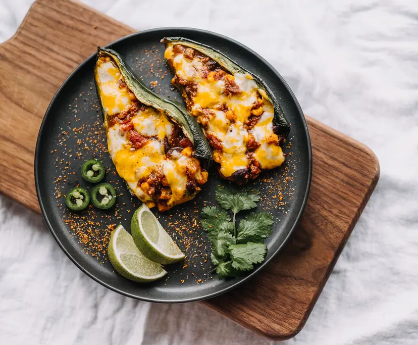

Gastronomia
La gastronomía sinaloense se caracteriza por platillos que combinan el mar y la tierra, con una fuerte influencia indígena y española.
La gastronomía sinaloense se caracteriza por platillos que combinan el mar y la tierra, con una fuerte influencia indígena y española.

| ||

|
 |